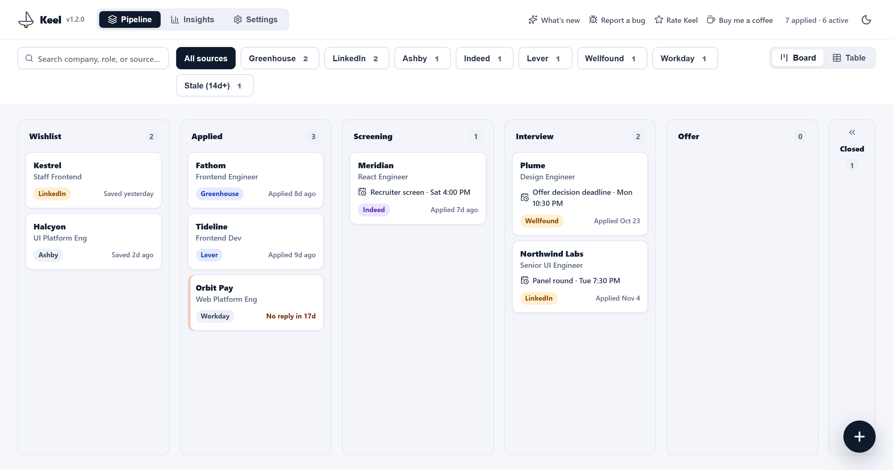
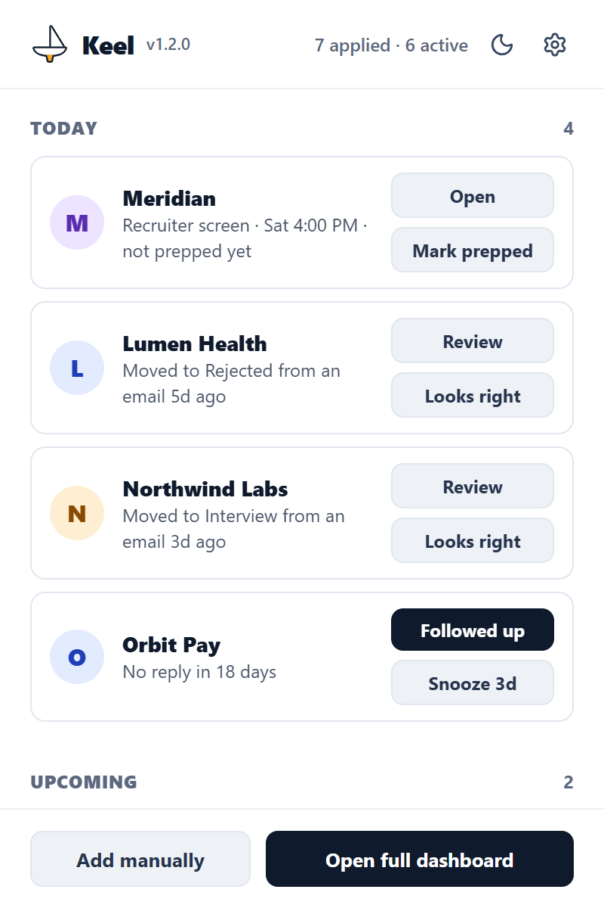

Keeps track of every job you apply to
Apply as you normally do. Keel saves the company, the role, the job description and the résumé you sent, right in your browser.

What it does
Saved as you apply
Submit an application and Keel keeps it, with the job description for when the posting disappears.
No applying twice
Open a job you've already applied to and Keel tells you when, and where it stands.
What needs you today
Interviews coming up, follow-ups due and open offers, in the toolbar popup.
Updates from Gmail
Optional: open a reply from a company and Keel offers to move that application along.
Answers filled in
Save the answers forms keep asking for, and Keel fills them in next time.
Yours to take
Export everything to a file or a spreadsheet, and import it on another computer.
One click from the toolbar
The popup lists what to do today: prep for tomorrow's interview, follow up on the application that went quiet, check a change Gmail spotted.
The icon is in colour on pages where Keel is saving applications, so you can tell at a glance.

Private by design
- Everything stays in your browser, on your device.
- No account, no server, no analytics, no ads.
- Questions about ID numbers, birth date, gender or payment are never saved.
Where it works
Tested and working:
- Greenhouse
Built in, still being tested:
- Indeed
- Lever
- Ashby
- Workday
- SmartRecruiters
- Wellfound
Company careers sites too, once you turn Keel on for all sites.
Questions
Where is my data kept?
In your browser's own storage, on your computer. Nothing is sent anywhere. Removing Keel deletes it, so export a copy first if you want to keep it.
Does Keel read my Gmail?
Only if you turn it on, and only the email you have open. It doesn't sign in or look through your inbox, and it changes nothing until you click.
What about a careers site Keel doesn't know?
Turn Keel on for all sites and it checks each page for a job posting or application form. You can also add any job from the popup.
Can I move my applications to another computer?
Yes. Export a Keel file from Settings, then import it on the other computer. Importing only adds what's missing.